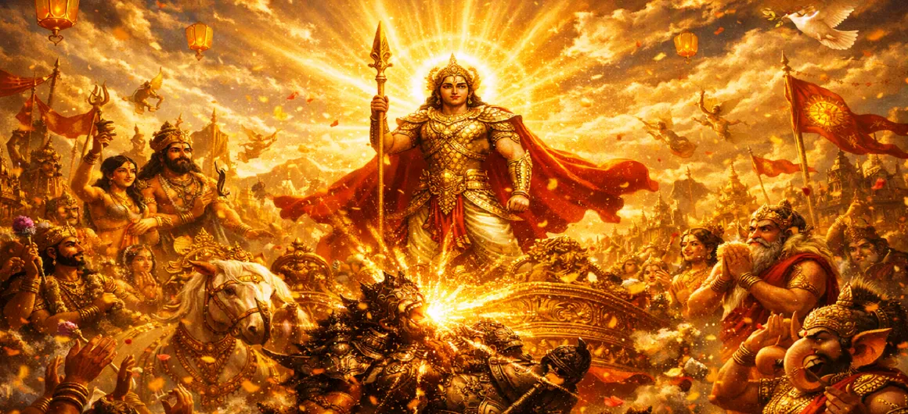

Celebration of Divine Victory
Chapter 28 of the Kumara Khanda portrays the grand, universal celebrations across heaven and earth following the historic defeat of the demon tyrant Tārakāsura.
As the dark clouds of oppression lift, the cosmos awakens to an era of unbridled joy, sacred music, and renewed divine harmony.
Chapter 28 Highlights & Full Overview
Universal Joy
Rejoicing across the heavens, earth, and netherworlds.
Celestial Drums
Rhythmic beats echoing through the skies in victory.
Flower Showers
Deities showering fragrant blooms over Lord Skanda.
Relief & Peace
The return of freedom and fearless living to the sages.
Songs of Triumph
Gandharvas and Apsaras singing hymns of praise.
New Dawn
The glorious beginning of a peaceful cosmic era.
Core Topics Detailed in This Chapter
1. The Immediate Aftermath of Victory
With the fall of Tārakāsura, the oppressive darkness that had long choked the cosmos instantly dissolves. A radiant wave of peace sweeps across the battlefield, signaling the definitive end of tyranny and the restoration of universal equilibrium.
2. Gathering of the Deities and Sages
Lord Indra, Brahmā, Viṣṇu, and the assembly of divine sages gather around Lord Skanda. Their faces, once shadowed by anxiety and defeat, now beam with radiant joy and profound gratitude for the youthful commander who delivered them.
3. Festive Displays Across the Three Worlds
Throughout heaven, earth, and the nether regions, celestial mansions and hermitages are decorated with banners, lamps, and fragrant garlands. The entire creation partakes in the grand festival, celebrating the triumph of light over dark forces.
4. Music, Dance, and Celestial Jubilation
Gandharvas sing melodious hymns of victory while Apsaras perform graceful dances of celebration. Heavenly drums reverberate through the clouds, filling every corner of existence with rhythmic beats of pure jubilation.
5. The Atmosphere of Fearlessness and Harmony
Sages and ascetics, who had long performed penance in fear, now walk freely without anxiety. The elements align in perfect harmony, and a profound sense of security blankets the entire universe as righteousness takes firm root.
6. Transition to Chapter 29 (The Gods Praise Lord Kumāra)
As the celebrations reach their peak and the gods prepare to formally honor their savior, the narrative flows naturally into Chapter 29: **The Gods Praise Lord Kumāra**.
Key Teachings and Spiritual Takeaways of Chapter 28
Joy of Liberation
Spiritual victory brings profound, unadulterated inner joy.
End of Fear
Overcoming inner ego replaces anxiety with absolute fearlessness.
Harmonious Living
Righteousness aligns life forces into peaceful coexistence.
Celebrating Goodness
Expressing gratitude for virtue uplifts the entire community.
Fresh Beginnings
Overcoming trials paves the way for spiritual growth.
Universal Peace
True victory benefits all beings across all realms.
Spiritual Reflection
Chapter 28 reminds us that when inner obstacles and ego are conquered, the soul experiences an authentic celebration of peace and freedom. Just as the heavens rejoiced over Tārakāsura's defeat, overcoming personal negativity brings light, song, and harmony back into our daily lives.
Living the Message of Chapter 28
Celebrate your personal milestones and spiritual breakthroughs with gratitude and joy.
Cultivate an environment of peace and fearlessness in your daily interactions.
Share positive energy and uplift others after overcoming difficult trials.
Key Spiritual Concepts
The grand celebration of spiritual and cosmic victory.
Universal joy experienced across all realms.
The establishment of absolute fearlessness and security.
Celestial music and hymns honoring righteousness.
The restoration of deep, lasting peace.
The uplifting impact of righteous triumph.
Chapter Summary
Kumara Khanda Chapter 28 captures the joyous celebrations across the three worlds following Lord Skanda's defeat of Tārakāsura. With flower showers, divine music, and universal relief, creation rejoices in the dawn of a peaceful and righteous cosmic era.
Frequently Asked Questions
1. What is the primary focus of Kumara Khanda Chapter 28?
Chapter 28 highlights the joyous festivities, grand celebrations, and universal relief across the three worlds following Lord Skanda's victory over Tārakāsura.
2. How do the celestial beings celebrate the victory?
The gods and celestial beings shower flowers, beat divine drums, perform sacred songs, and rejoice in the restoration of cosmic peace.
3. What chapter follows Chapter 28?
The next chapter is Chapter 29, titled 'The Gods Praise Lord Kumāra'.
“With flowers falling from the heavens and drums echoing in triumph, the three worlds rejoiced in the glorious dawn of divine peace.”
Continue Through Kumara Khanda
Chapter 28 covers the celebration of divine victory. Continue to the next chapter, The Gods Praise Lord Kumāra.